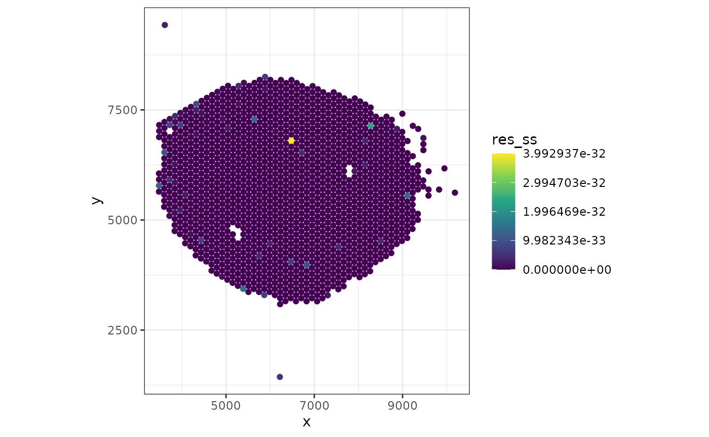

Spatial Transcriptomics Deconvolution with `SPOTlight`
Marc Elosua-Bayes
National Center for Genomic Analysis - Center for Genomic RegulationUniversity Pompeu Fabramarc.elosua@cnag.crg.eu
Helena L. Crowell
Institute for Molecular Life Sciences, University of Zurich, SwitzerlandSIB Swiss Institute of Bioinformatics, University of Zurich, Switzerlandhelena.crowell@uzh.ch
18 enero 2022
Source:vignettes/SPOTlight_kidney.Rmd
SPOTlight_kidney.RmdAbstract
Spatially resolved gene expression profiles are key to understand tissue organization and function. However, novel spatial transcriptomics (ST) profiling techniques lack single-cell resolution and require a combination with single-cell RNA sequencing (scRNA-seq) information to deconvolute the spatially indexed datasets. Leveraging the strengths of both data types, we developed SPOTlight, a computational tool that enables the integration of ST with scRNA-seq data to infer the location of cell types and states within a complex tissue. SPOTlight is centered around a seeded non-negative matrix factorization (NMF) regression, initialized using cell-type marker genes and non-negative least squares (NNLS) to subsequently deconvolute ST capture locations (spots).
For a more detailed explanation of SPOTlight consider looking at our manuscript: > Elosua-Bayes M, Nieto P, Mereu E, Gut I, Heyn H.
SPOTlight: seeded NMF regression to deconvolute
spatial transcriptomics spots with single-cell transcriptomes.
Nucleic Acids Res. 2021;49(9):e50. doi: 10.1093
Introduction
What is SPOTlight?
SPOTlight is a tool that enables the deconvolution of cell types and cell type proportions present within each capture location comprising mixtures of cells. Originally developed for 10X’s Visium - spatial transcriptomics - technology, it can be used for all technologies returning mixtures of cells.
SPOTlight is based on learning topic profile signatures, by means of an NMFreg model, for each cell type and finding which combination of cell types fits best the spot we want to deconvolute. Find below a graphical abstract visually summarizing the key steps.

Starting point
The minimal unit of data required to run SPOTlight are:
- ST (sparse) matrix with the expression, raw or normalized, where rows = genes and columns = capture locations.
- Single cell (sparse) matrix with the expression, raw or normalized,
where rows = genes and columns = cells. - Vector indicating the cell identity for each column in the single cell expression matrix.
Data inputs can also be objects of class SpatialExperiment (SE), SingleCellExperiment (SCE) or Seurat objects from which the minimal data will be extracted.
Getting started
Data description
For this vignette, we will use a SE put out by 10X Genomics containing a Visium kidney slide. The raw data can be accessed here.
SCE data comes from the The Tabula Muris Consortium which contains >350,000 cells from from male and female mice belonging to six age groups, ranging from 1 to 30 months. From this dataset we will only load the kidney subset to map it to the Visium slide.
Loading the data
Both datasets are available through Biocondcutor’s ExperimentHub and can be loaded into R as follows:
library(ExperimentHub)
# initialize a Hub instance which stores a complete set of recordd
eh <- ExperimentHub()
# retrieve any records that match our keyword(s) of interest
query(eh, "Tabula Muris Senis droplet Kidney")## ExperimentHub with 7 records
## # snapshotDate(): 2021-10-19
## # $dataprovider: The Tabula Muris Consortium
## # $species: Mus musculus
## # $rdataclass: matrix, H5File, DFrame
## # additional mcols(): taxonomyid, genome, description,
## # coordinate_1_based, maintainer, rdatadateadded, preparerclass, tags,
## # rdatapath, sourceurl, sourcetype
## # retrieve records with, e.g., 'object[["EH6386"]]'
##
## title
## EH6386 | Tabula Muris Senis droplet Kidney colData
## EH6387 | Tabula Muris Senis droplet Kidney counts
## EH6388 | Tabula Muris Senis droplet Kidney processed counts
## EH6389 | Tabula Muris Senis droplet Kidney rowData
## EH6390 | Tabula Muris Senis droplet Kidney PCA
## EH6391 | Tabula Muris Senis droplet Kidney tSNE
## EH6392 | Tabula Muris Senis droplet Kidney UMAP
query(eh, "MouseKidneyCoronal")## ExperimentHub with 2 records
## # snapshotDate(): 2021-10-19
## # $dataprovider: 10X Genomics
## # $species: Mus musculus
## # $rdataclass: SpatialExperiment
## # additional mcols(): taxonomyid, genome, description,
## # coordinate_1_based, maintainer, rdatadateadded, preparerclass, tags,
## # rdatapath, sourceurl, sourcetype
## # retrieve records with, e.g., 'object[["EH6707"]]'
##
## title
## EH6707 | MouseKidneyCoronal
## EH6743 | MouseKidneyCoronal_v3.13Load the spatial data:
library(TENxVisiumData)
spe <- MouseKidneyCoronal()
# Use symbols instead of Ensembl IDs as feature names
rownames(spe) <- rowData(spe)$symbolLoad the single cell data. Since our data comes from the Tabula Muris Sensis dataset, we can directly load the SCE object as follows:
library(TabulaMurisSenisData)
sce <- TabulaMurisSenisDroplet(tissues = "Kidney")$KidneyQuick data exploration:
table(sce$free_annotation, sce$age)##
## 1m 3m 18m
## CD45 11 32 76
## CD45 B cell 7 5 45
## CD45 NK cell 1 4 8
## CD45 T cell 8 18 48
## CD45 macrophage 59 132 254
## CD45 plasma cell 0 0 9
## Epcam kidney distal convoluted tubule epithelial cell 78 126 169
## Epcam brush cell 52 15 78
## Epcam kidney collecting duct principal cell 77 110 132
## Epcam kidney proximal convoluted tubule epithelial cell 945 684 1120
## Epcam podocyte 92 94 64
## Epcam proximal tube epithelial cell 25 195 296
## Epcam thick ascending tube S epithelial cell 465 312 248
## Pecam Kidney cortex artery cell 75 78 91
## Pecam fenestrated capillary endothelial 164 182 164
## Pecam kidney capillary endothelial cell 49 38 25
## Stroma fibroblast 15 16 37
## Stroma kidney mesangial cell 80 51 18
## nan 285 238 256
##
## 21m 24m 30m
## CD45 54 1010 106
## CD45 B cell 54 2322 62
## CD45 NK cell 2 47 4
## CD45 T cell 42 846 177
## CD45 macrophage 101 259 514
## CD45 plasma cell 12 169 42
## Epcam kidney distal convoluted tubule epithelial cell 153 0 131
## Epcam brush cell 169 0 31
## Epcam kidney collecting duct principal cell 58 0 370
## Epcam kidney proximal convoluted tubule epithelial cell 868 0 817
## Epcam podocyte 66 0 170
## Epcam proximal tube epithelial cell 5 0 1977
## Epcam thick ascending tube S epithelial cell 228 0 313
## Pecam Kidney cortex artery cell 69 0 115
## Pecam fenestrated capillary endothelial 134 0 211
## Pecam kidney capillary endothelial cell 18 0 7
## Stroma fibroblast 13 0 80
## Stroma kidney mesangial cell 22 0 7
## nan 189 1068 579We see how there is a good representation of all the cell types across ages except at 24m. In order to reduce the potential noise introduced by age and batch effects we are going to select cells all coming from the same age.
Workflow
Preprocessing
If the dataset is very large we want to downsample it to train the model, both in of number of cells and number of genes. To do this, we want to keep a representative amount of cells per cluster and the most biologically relevant genes.
In the paper we show how downsampling the number of cells per cell identity to ~100 doesn’t affect the performance of the model. Including >100 cells per cell identity provides marginal improvement while greatly increasing computational time and resources. Furthermore, restricting the gene set to the marker genes for each cell type along with up to 3.000 highly variable genes further optimizes performance and computational resources. You can find a more detailed explanation in the original paper.
Feature selection
Our first step is to get the marker genes for each cell type. We follow the Normalization procedure as described in OSCA. We first carry out library size normalization to correct for cell-specific biases:
sce <- logNormCounts(sce)Variance modelling
We aim to identify highly variable genes that drive biological heterogeneity. By feeding these genes to the model we improve the resolution of the biological structure and reduce the technical noise.
dec <- modelGeneVar(sce)
plot(dec$mean, dec$total, xlab = "Mean log-expression", ylab = "Variance")
curve(metadata(dec)$trend(x), col = "blue", add = TRUE)
# Get the top 3000 genes.
hvg <- getTopHVGs(dec, n = 3000)Next we obtain the marker genes for each cell identity. You can use whichever method you want as long as it returns a weight indicating the importance of that gene for that cell type. Examples include avgLogFC, AUC, pct.expressed, p-value…
colLabels(sce) <- colData(sce)$free_annotation
# Get vector indicating which genes are neither ribosomal or mitochondrial
genes <- !grepl(pattern = "^Rp[l|s]|Mt", x = rownames(sce))
# Compute marker genes
mgs <- scoreMarkers(sce, subset.row = genes)Then we want to keep only those genes that are relevant for each cell identity:
mgs_fil <- lapply(names(mgs), function(i) {
x <- mgs[[i]]
# Filter and keep relevant marker genes, those with AUC > 0.8
x <- x[x$mean.AUC > 0.8, ]
# Sort the genes from highest to lowest weight
x <- x[order(x$mean.AUC, decreasing = TRUE), ]
# Add gene and cluster id to the dataframe
x$gene <- rownames(x)
x$cluster <- i
data.frame(x)
})
mgs_df <- do.call(rbind, mgs_fil)Cell Downsampling
Next, we randomly select at most 100 cells per cell identity. If a cell type is comprised of <100 cells, all the cells will be used. If we have very biologically different cell identities (B cells vs. T cells vs. Macrophages vs. Epithelial) we can use fewer cells since their transcriptional profiles will be very different. In cases when we have more transcriptionally similar cell identities we need to increase our N to capture the biological heterogeneity between them.
In our experience we have found that for this step it is better to select the cells from each cell type from the same batch if you have a joint dataset from multiple runs. This will ensure that the model removes as much signal from the batch as possible and actually learns the biological signal.
For the purpose of this vignette and to speed up the analysis, we are going to use 20 cells per cell identity:
Deconvolution
You are now set to run SPOTlight to deconvolute the spots!
Briefly, here is how it works:
NMF is used to factorize a matrix into two lower dimensionality matrices without negative elements. We first have an initial matrix V (SCE count matrix), which is factored into W and H. Unit variance normalization by gene is performed in V and in order to standardize discretized gene expression levels, ‘counts-umi’. Factorization is then carried out using the non-smooth NMF method, implemented in the R package NMF NMF (14). This method is intended to return sparser results during the factorization in W and H, thus promoting cell-type-specific topic profile and reducing overfitting during training. Before running factorization, we initialize each topic, column, of W with the unique marker genes for each cell type with weights. In turn, each topic of H in
SPOTlightis initialized with the corresponding belongance of each cell for each topic, 1 or 0. This way, we seed the model with prior information, thus guiding it towards a biologically relevant result. This initialization also aims at reducing variability and improving the consistency between runs.NNLS regression is used to map each capture location’s transcriptome in V’ (SE count matrix) to H’ using W as the basis. We obtain a topic profile distribution over each capture location which we can use to determine its composition.
we obtain Q, cell-type specific topic profiles, from H. We select all cells from the same cell type and compute the median of each topic for a consensus cell-type-specific topic signature. We then use NNLS to find the weights of each cell type that best fit H’ minimizing the residuals.
You can visualize the above explanation in the following workflow scheme:

res <- SPOTlight(
x = sce,
y = spe,
groups = sce$free_annotation,
mgs = mgs_df,
hvg = hvg,
weight_id = "mean.AUC",
group_id = "cluster",
gene_id = "gene")## Scaling count matrix## Seeding initial matrices## Training NMF model## Time for training: 0.2min## Deconvoluting mixture dataExtract data from SPOTlight:
## CD45 B cell CD45 NK cell CD45 T cell
## AAACCGTTCGTCCAGG-1 0.04085780 0.03745327 0.09125076
## AAACCTAAGCAGCCGG-1 0.00000000 0.00000000 0.09927724
## AAACGAGACGGTTGAT-1 0.05342870 0.01022877 0.11173765
## AAACGGTTGCGAACTG-1 0.02799133 0.03798122 0.07084192
## AAACTCGGTTCGCAAT-1 0.01718571 0.14946677 0.08317662
## AAACTGCTGGCTCCAA-1 0.07110740 0.05131965 0.08557376
# Extract NMF model fit
mod <- res$NMFVisualization
In the next section we show how to visualize the data and interpret SPOTlight’s results.
Topic profiles
We first take a look at the Topic profiles. By setting facet = FALSE we want to evaluate how specific each topic signature is for each cell identity. Ideally each cell identity will have a unique topic profile associated to it as seen below.
plotTopicProfiles(
x = mod,
y = sce$free_annotation,
facet = FALSE,
min_prop = 0.01,
ncol = 1) +
theme(aspect.ratio = 1)Next we also want to ensure that all the cells from the same cell identity share a similar topic profile since this will mean that SPOTlight has learned a consistent signature for all the cells from the same cell identity.
plotTopicProfiles(
x = mod,
y = sce$free_annotation,
facet = TRUE,
min_prop = 0.01,
ncol = 6)Lastly we can take a look at which genes the model learned for each topic. Higher values indicate that the gene is more relevant for that topic. In the below table we can see how the top genes for Topic1 are characteristic for B cells (i.e. Cd79a, Cd79b, Ms4a1…).
## Topic1 Topic2 Topic3 Topic4 Topic5
## Cd79a 0.002810294 4.234637e-319 0.000000e+00 6.705534e-221 0.001914301
## Ly6d 0.004164431 2.064875e-248 2.478523e-285 0.000000e+00 0.001618620
## Fau 0.006895937 2.490729e-03 1.553858e-03 1.942712e-03 0.001695927
## Cd37 0.002678810 3.230637e-220 1.606590e-03 1.225580e-48 0.001991599
## Cd79b 0.003905927 2.728267e-301 0.000000e+00 1.105812e-137 0.001339975
## Cd74 0.001593506 1.968397e-175 2.540083e-226 1.486929e-03 0.001602849
## Topic6 Topic7 Topic8 Topic9 Topic10
## Cd79a 0.000000e+00 0.000000e+00 0.000000e+00 0.000000e+00 0.000000e+00
## Ly6d 8.975658e-316 0.000000e+00 1.729897e-307 5.433815e-314 2.696091e-04
## Fau 1.692851e-60 5.041989e-16 1.945795e-66 1.568102e-11 6.454253e-04
## Cd37 1.404302e-287 4.579565e-150 2.706540e-279 8.501571e-286 0.000000e+00
## Cd79b 0.000000e+00 0.000000e+00 0.000000e+00 0.000000e+00 0.000000e+00
## Cd74 8.529272e-230 7.334888e-239 1.694522e-234 1.525215e-204 6.501910e-292
## Topic11 Topic12 Topic13 Topic14 Topic15
## Cd79a 0.000000e+00 0.000000e+00 0.000000e+00 0.000000e+00 0.000000e+00
## Ly6d 0.000000e+00 1.704725e-302 1.477727e-300 0.000000e+00 4.943387e-298
## Fau 1.391518e-15 4.520660e-26 1.159283e-04 7.740333e-18 7.263718e-30
## Cd37 0.000000e+00 2.667158e-274 2.312004e-272 3.517747e-321 7.734263e-270
## Cd79b 0.000000e+00 0.000000e+00 0.000000e+00 0.000000e+00 0.000000e+00
## Cd74 2.976077e-301 1.747066e-243 8.821218e-161 4.980218e-20 4.804072e-225
## Topic16 Topic17
## Cd79a 0.000000e+00 0.000000e+00
## Ly6d 0.000000e+00 0.000000e+00
## Fau 2.607292e-04 3.976858e-67
## Cd37 0.000000e+00 9.653549e-320
## Cd79b 0.000000e+00 0.000000e+00
## Cd74 1.765619e-282 1.843635e-238
# This can be dynamically visualized with DT as shown below
# DT::datatable(sign, fillContainer = TRUE, filter = "top")Co-localization
Now that we know which cell types are found within each spot we can make a graph representing spatial interactions where cell types will have stronger edges between them the more often we find them within the same spot.
See here for additional graphical parameters.
plotInteractions(mat, "heatmap")
plotInteractions(mat, "network")Scatterpie
We can also visualize the cell type proportions as sections of a pie chart for each spot. You can modify the colors as you would a standard ggplot2.
ct <- colnames(mat)
mat[mat < 0.1] <- 0
# Define color palette
# (here we use 'paletteMartin' from the 'colorBlindness' package)
paletteMartin <- c(
"#000000", "#004949", "#009292", "#ff6db6", "#ffb6db",
"#490092", "#006ddb", "#b66dff", "#6db6ff", "#b6dbff",
"#920000", "#924900", "#db6d00", "#24ff24", "#ffff6d")
pal <- colorRampPalette(paletteMartin)(length(ct))
names(pal) <- ct
plotSpatialScatterpie(
x = spe,
y = mat,
cell_types = colnames(y),
img = FALSE,
scatterpie_alpha = 1,
pie_scale = 0.4) +
scale_fill_manual(
values = pal,
breaks = names(pal))Residuals
Lastly we can also take a look at how well the model predicted the proportions for each spot. We do this by looking at the residuals of the sum of squares for each spot which indicates the amount of biological signal not explained by the model.
spe$res_ss <- res[[2]][colnames(spe)]
xy <- spatialCoords(spe)
spe$x <- xy[, 1]
spe$y <- xy[, 2]
ggcells(spe, aes(x, y, color = res_ss)) +
geom_point() +
scale_color_viridis_c() +
coord_fixed() +
theme_bw()
Session information
## R version 4.1.2 (2021-11-01)
## Platform: x86_64-pc-linux-gnu (64-bit)
## Running under: Ubuntu 20.04.2 LTS
##
## Matrix products: default
## BLAS: /usr/lib/x86_64-linux-gnu/atlas/libblas.so.3.10.3
## LAPACK: /usr/lib/x86_64-linux-gnu/atlas/liblapack.so.3.10.3
##
## locale:
## [1] LC_CTYPE=en_US.UTF-8 LC_NUMERIC=C
## [3] LC_TIME=es_ES.UTF-8 LC_COLLATE=en_US.UTF-8
## [5] LC_MONETARY=es_ES.UTF-8 LC_MESSAGES=en_US.UTF-8
## [7] LC_PAPER=es_ES.UTF-8 LC_NAME=C
## [9] LC_ADDRESS=C LC_TELEPHONE=C
## [11] LC_MEASUREMENT=es_ES.UTF-8 LC_IDENTIFICATION=C
##
## attached base packages:
## [1] stats4 stats graphics grDevices utils datasets methods
## [8] base
##
## other attached packages:
## [1] NMF_0.23.0 cluster_2.1.2
## [3] rngtools_1.5.2 pkgmaker_0.32.2
## [5] registry_0.5-1 rhdf5_2.38.0
## [7] TabulaMurisSenisData_1.0.0 TENxVisiumData_1.2.0
## [9] ExperimentHub_2.2.0 AnnotationHub_3.2.0
## [11] BiocFileCache_2.2.0 dbplyr_2.1.1
## [13] scran_1.22.1 scater_1.22.0
## [15] scuttle_1.4.0 SpatialExperiment_1.4.0
## [17] SingleCellExperiment_1.16.0 SummarizedExperiment_1.24.0
## [19] GenomicRanges_1.46.1 GenomeInfoDb_1.30.0
## [21] IRanges_2.28.0 S4Vectors_0.32.3
## [23] MatrixGenerics_1.6.0 matrixStats_0.61.0
## [25] SPOTlight_0.99.0 Biobase_2.54.0
## [27] BiocGenerics_0.40.0 ggplot2_3.3.5
## [29] BiocStyle_2.22.0
##
## loaded via a namespace (and not attached):
## [1] systemfonts_1.0.3 plyr_1.8.6
## [3] igraph_1.2.9 BiocParallel_1.28.2
## [5] gridBase_0.4-7 digest_0.6.29
## [7] foreach_1.5.1 htmltools_0.5.2
## [9] viridis_0.6.2 magick_2.7.3
## [11] gdata_2.18.0 fansi_0.5.0
## [13] magrittr_2.0.1 memoise_2.0.1
## [15] ScaledMatrix_1.2.0 doParallel_1.0.16
## [17] limma_3.50.0 Biostrings_2.62.0
## [19] R.utils_2.11.0 pkgdown_2.0.2
## [21] colorspace_2.0-2 rappdirs_0.3.3
## [23] blob_1.2.2 ggrepel_0.9.1
## [25] textshaping_0.3.6 xfun_0.28
## [27] dplyr_1.0.7 crayon_1.4.2
## [29] RCurl_1.98-1.5 jsonlite_1.7.2
## [31] scatterpie_0.1.7 iterators_1.0.13
## [33] glue_1.5.1 polyclip_1.10-0
## [35] gtable_0.3.0 nnls_1.4
## [37] zlibbioc_1.40.0 XVector_0.34.0
## [39] DelayedArray_0.20.0 BiocSingular_1.10.0
## [41] DropletUtils_1.14.1 Rhdf5lib_1.16.0
## [43] HDF5Array_1.22.1 scales_1.1.1
## [45] DBI_1.1.1 edgeR_3.36.0
## [47] Rcpp_1.0.7 viridisLite_0.4.0
## [49] xtable_1.8-4 dqrng_0.3.0
## [51] bit_4.0.4 rsvd_1.0.5
## [53] httr_1.4.2 metapod_1.2.0
## [55] RColorBrewer_1.1-2 ellipsis_0.3.2
## [57] farver_2.1.0 pkgconfig_2.0.3
## [59] R.methodsS3_1.8.1 sass_0.4.0
## [61] locfit_1.5-9.4 utf8_1.2.2
## [63] ggcorrplot_0.1.3 labeling_0.4.2
## [65] AnnotationDbi_1.56.2 later_1.3.0
## [67] tidyselect_1.1.1 rlang_0.4.12
## [69] reshape2_1.4.4 BiocVersion_3.14.0
## [71] munsell_0.5.0 tools_4.1.2
## [73] cachem_1.0.6 generics_0.1.1
## [75] RSQLite_2.2.9 evaluate_0.14
## [77] stringr_1.4.0 fastmap_1.1.0
## [79] yaml_2.2.1 ragg_1.2.1
## [81] knitr_1.36 bit64_4.0.5
## [83] fs_1.5.1 purrr_0.3.4
## [85] KEGGREST_1.34.0 sparseMatrixStats_1.6.0
## [87] mime_0.12 R.oo_1.24.0
## [89] compiler_4.1.2 png_0.1-7
## [91] interactiveDisplayBase_1.32.0 filelock_1.0.2
## [93] curl_4.3.2 beeswarm_0.4.0
## [95] tweenr_1.0.2 tibble_3.1.6
## [97] statmod_1.4.36 bslib_0.3.1
## [99] stringi_1.7.6 highr_0.9
## [101] desc_1.4.0 lattice_0.20-45
## [103] bluster_1.4.0 Matrix_1.3-4
## [105] vctrs_0.3.8 pillar_1.6.4
## [107] lifecycle_1.0.1 rhdf5filters_1.6.0
## [109] BiocManager_1.30.16 jquerylib_0.1.4
## [111] BiocNeighbors_1.12.0 bitops_1.0-7
## [113] irlba_2.3.4 httpuv_1.6.3
## [115] R6_2.5.1 promises_1.2.0.1
## [117] bookdown_0.24 gridExtra_2.3
## [119] vipor_0.4.5 codetools_0.2-18
## [121] MASS_7.3-54 gtools_3.9.2
## [123] assertthat_0.2.1 rprojroot_2.0.2
## [125] rjson_0.2.20 withr_2.4.3
## [127] SeuratObject_4.0.4 GenomeInfoDbData_1.2.7
## [129] parallel_4.1.2 ggfun_0.0.4
## [131] grid_4.1.2 beachmat_2.10.0
## [133] tidyr_1.1.4 rmarkdown_2.11
## [135] DelayedMatrixStats_1.16.0 ggforce_0.3.3
## [137] shiny_1.7.1 ggbeeswarm_0.6.0